Foundations
Foundations are the visual elements needed to create engaging end-to-end user experiences. This includes guidance on iconography, typography, layout and structure.

Foundations are the visual elements needed to create engaging end-to-end user experiences. This includes guidance on iconography, typography, layout and structure.